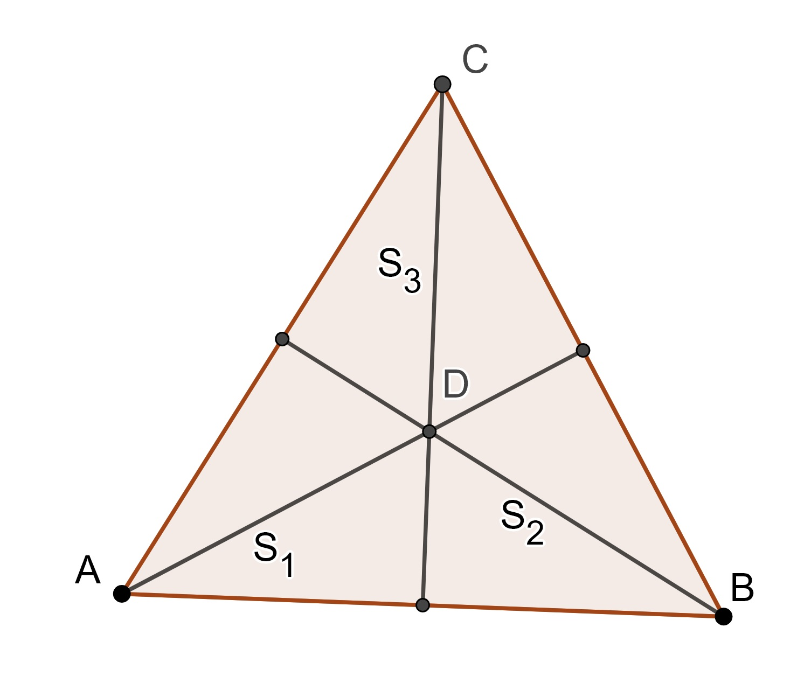
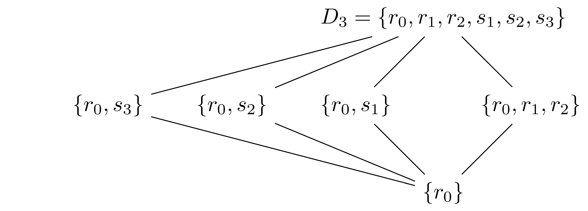

11.1 Groups and Transformations
To prepare to study the group of transformations that correspond to Euclidean geometry, we need to do a quick review of group theory.
11.1.1 Group Review
Recall from Section 6.1 the definition of a group:
Definition 11.1 (Group) A non-empty set \(G\), together with a binary operation, \(*\), is called a group if it satisfies the following conditions:
- \(a*b \in G, \: \forall a,b \in G\) (Closure)
- \((a*b)*c = a * (b*c), \forall a,b,c \in G\) (Associative)
- There exists an element \(e \in G\) such that for all \(a\in G\), \(e*a=a*e=a\) (Identity)
- For each \(a\in G\), there exists an element \(b\in G\) such that \(a*b=b*a=e\) (Inverse)
Some of the groups that we have already defined are the real and complex numbers under addition, \((\mathbb{R},+)\) and \((\mathbb{C},+)\); the positive real numbers under multiplication, \((\mathbb{R}^+, \cdot)\); the bijections on a set \(A\) under function composition; and the \(2\times 2\) invertible matrices with determinant of 1 under matrix multiplication, \((SL(2,\mathbb{R}),\cdot)\).
Another group that will prove useful in the study of geometry is the unit circle in the complex plane under multiplication, \[S^1 = \left\{ z\in \mathbb{C}\: \vert \: |z|=1\right\}.\] Recall from Section 4.6 that every \(z\in S^1\) can be written in the form \[z= e^{i\theta} = \exp(i\theta)= \cos (\theta) + i \sin(\theta)\] and so we have multiple ways to represent the same complex number, for example \(i=\exp\left(i\frac{\pi}{2}\right)= \exp \left( i \frac{5\pi}{2}\right)\). We can see that the group \((S^1,\cdot)\) has a identity of \(1\) and the inverse of \(z=e^{i\theta}\) is \(z^{-1}=\overline{z} = e^{-i\theta}\).
11.1.2 Dihedral Groups
Before we look at the transformations of the plane, we will study the transformations of regular polygons.
Let \(T\) be an equilateral triangle. Since \(T\) is equilateral it has symmetry about the three perpendicular bisectors of the triangle and rotational symmetry about the center of the triangle with angles of \(120^\circ\) and \(240^\circ\).
We will let \(r_0\) be the identity transformation of the triangle, \(r_1\) be the rotation of the triangle about the center by \(120^\circ\), and \(r_2\) the be the rotation of the triangle about the center by \(240^\circ\).

We can also define \(s_1\) to be the reflection over \(S_1\), \(s_2\) be the reflection about \(S_2\), and \(s_3\) be the reflection about \(S_3\). If we consider the operation of composition we can create the following table of these transformations.
\[\begin{array}{c|cccccc} \circ & r_0 & r_1 & r_2 & s_1 & s_2 & s_3 \\ \hline r_0 & r_0 & r_1 & r_2 & s_1 & s_2 & s_3 \\ r_1 & r_1 & r_2 & r_0 & s_2 & s_3 & s_1 \\ r_2 & r_2 & r_0 & r_1 & s_3 & s_1 & s_2 \\ s_1 & s_1 & s_3 & s_2 & r_0 & r_2 & r_1 \\ s_2 & s_2 & s_1 & s_3 & r_1 & r_0 & r_2 \\ s_3 & s_3 & s_2 & s_1 & r_2 & r_1 & r_0 \\ \end{array}\]
We see that this set of transformation under composition forms a group with \(r_0\) being the identity. This group is usually called the dihedral group of symmetries of the triangle, \(D_3\).
We can generalize this to any regular \(n\)-gon so that the group of symmetries of an \(n\)-gon is labeled \(D_n\). For example, we can represent the 16 elements of \(D_8\) using a stop sign.
11.1.3 Subgroups
As we see in the examples from Chapter 6, groups are often contained in larger groups, \((\mathbb{R},+)\subset (\mathbb{C},+)\). We now turn our study to how groups can be nested within each other and the resulting consequences of such nestings by studying subgroups.
Definition 11.2 Let \((G,*)\) be a group and let \(S\subseteq G\). Then \((S,*)\) is called a subgroup of \((G,*)\) if \((S,*)\) is also a group. We denote this by \(S \leq G\), with the binary operation assumed.
From the definition of a subgroup it would appear that one would have to prove all four of the requirements for a set and operation to form a group. However, since we already know information about the set and operation, we already have that the operation is associative on the set and that the larger group has a unique identity and each element of the larger group has a unique inverse. Therefore, proving that a subset can itself be considered a group is much simpler.
Theorem 11.1 Let \((G,*)\) be a group and \(S \subseteq G\). The following are sufficient for determining if \((S,*)\) is a subgroup of \((G,*)\).
- \(S\) is closed under the binary operation of \(G\) (Closure)
- The identity of \(G\) is an element of \(S\) (Identity)
- For all \(a\in S\), \(a^{-1}\in S\). (Inverse)
We can see that for every group \(G\), the group \(G\) itself is a subgroup of \(G\) and if \(e\) is the identity in \(G\), \(\{e\}\) is a subgroup of \(G\), called the trivial subgroup. Any subgroup of \(G\) that is not the entire group itself is called a proper subgroup.
We can use the Cayley table for \(D_3\) to see that the set of rotations, \(\{r_0, r_1, r_2\}\), forms a subgroup of \(D_3\) since the composition of two rotations is a rotation, the identity is a rotation, and the inverse of a rotation is a rotation.
We can also see that \(({r_0},\circ)\) is a subgroup of \(D_3\). Other subgroups of \(D_3\) include those defined by the subsets \(\{r_0,s_1\}, \{r_0, s_2\}, \{r_0, s_3\}\) since \(s_i^2=r_0\) for each of the reflections. As soon as a subgroup has more than one reflection, we can see that the closure condition requires that the subgroup to be the entire group. Similarly, if the subgroup has more than the trivial rotation, it must have all of the rotations.
We see in this discussion that the subgroup structure of \(D_3\) is given by the following diagram.

11.1.4 Exercises
Identify whether the given set and operation form a group. If they do not, state which property they fail and give an example.
- Integers under addition.
- Positive integers under multiplication.
- Rational numbers under multiplication.
- Even integers under addition.
- Odd integers under multiplication.
You might notice that none of the operations for groups in this section have been subtraction or division. Why do you think this is? Could a group be formed with the operation of subtraction or division?
Let \(D_4\) be the dihedral group of the square.
- Create a Cayley table for \(D_4\).
- Determine the subgroup structure of \(D_4\).
How are the groups \((\mathbb{Z},+)\), \((\mathbb{Q},+)\), and \((\mathbb{R},+)\) related as subgroups? (Check for subnormal properties.)
Let \(4\mathbb{Z}\) be the set of integer multiples of 4.
- Prove that \((4\mathbb{Z},+)\) is a subgroup of \(\mathbb{Z}\) or provide a counter example.
- Prove that \((4\mathbb{Z},*)\) is a subgroup of \(\mathbb{Z}\) or provide a counter example.
An alternative way to defined the unit cicle is as follows: \[S^1 = \left\{ z=e^{i\theta} \: \vert \: \theta \in \mathbb{R} \right\}.\]
Given that we know \(\mathbb{Z}\) forms a group under addition, show that $K = { z=e^{i}:: k } $ is a subgroup of \(S^1\). You do not need to show associativity.